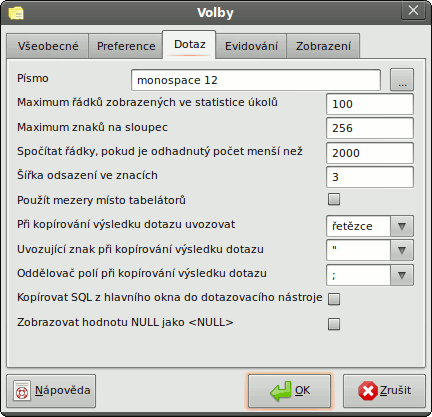

Volby pgAdmin - Karta 3 (Dotaz)

- Písmo - Zde si můžete zvolit font, který se bude používat při psaní textu SQL. To se může hodit pro vícebajtové
znakové sady, které standardní systémový font nepokryje.
- Maximum řádků zobrazených ve statistice úkolů - Určuje počet úkolů a kroků úkolů, které lze načíst při prohlížení
statistik. Na rozdíl od ostatních statistik, které mají pevný počet řádků, u úkolů se vytvoří nový řádek při každém spuštění
úkolu nebo kroku úkolu. Zobrazují se vždy nejnovější statistiky.
- Maximum znaků na sloupec - Zde lze omezit maximální délku dat zobrazených v jednom sloupci.
- Spočítat řádky, pokud je odhadnutý počet menší než - Pokud je odhadovaný počet řádků tabulky (zjišťuje se
ze statistik tabulky) menší než tento limit, položí se dotaz „SELECT count(*)“, aby se zjistil přesný počet pro zobrazení
v informacích o objektu.
- Šířka odsazení ve znacích - Udává šířku odsazení ve znacích použitou k odsazování textu SQL.
- Použít mezery místo tabelátorů - Pokud je tato volba zapnutá a v poli pro zadávání SQL použijete tabelátor, vloží
se místo něj mezery.
- Při kopírování výsledku dotazu uvozovat - Tato volba určuje, jak se budou používat uvozovky, když výsledný
seznam dotazu kopírujete do schránky. Uvozovky se mohou použít pouze na sloupce s řetězci (např. čísla v uvozovkách nebudou)
nebo na všechny sloupce bez ohledu na typ dat nebo lze použití uvozovek úplně zakázat. Pokud používání uvozovek zakážete, mohou
nastat problémy s kopírováním a vkládáním v případě, že se vyskytne nějaký speciální znak, např. odřádkování.
- Uvozující znak při kopírování výsledku dotazu - Tato volba určuje znak, který by se měl použít k uvození
hodnot, když výsledný seznam dotazu kopírujete do schránky. Pokud je předchozí volba nastavená na „nic“, nemá tato
volba žádný význam.
- Oddělovač polí při kopírování výsledku dotazu - Tato volba určuje znak, který by se měl použít na oddělení polí, když
výsledný seznam dotazu kopírujete do schránky.
- Kopírovat SQL z hlavního okna do dotazovacího nástroje - Když otevřete dotazovací nástroj a je zapnutá tato volba,
vloží se do něj definice objektu, který je zrovna vybraný ve stromu objektů.
- Zobrazovat hodnoty NULL jako <NULL> - Zapnutí této volby způsobí, že se budou hodnoty NULL zobrazovat v
podobě <NULL>. Týká se to pouze zobrazování, na exportovaná data to nemá žádný vliv.